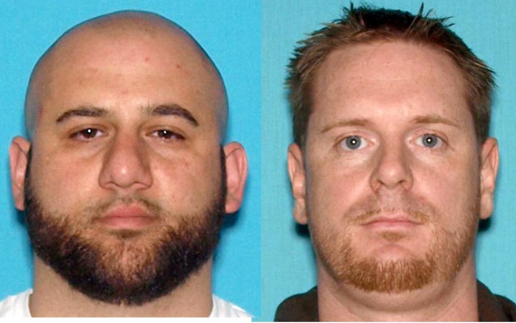
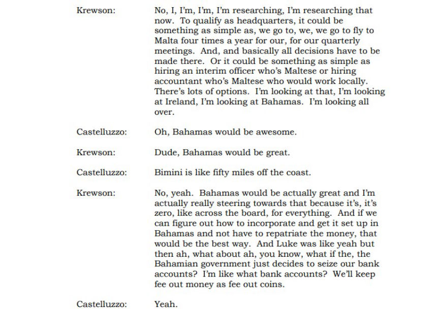
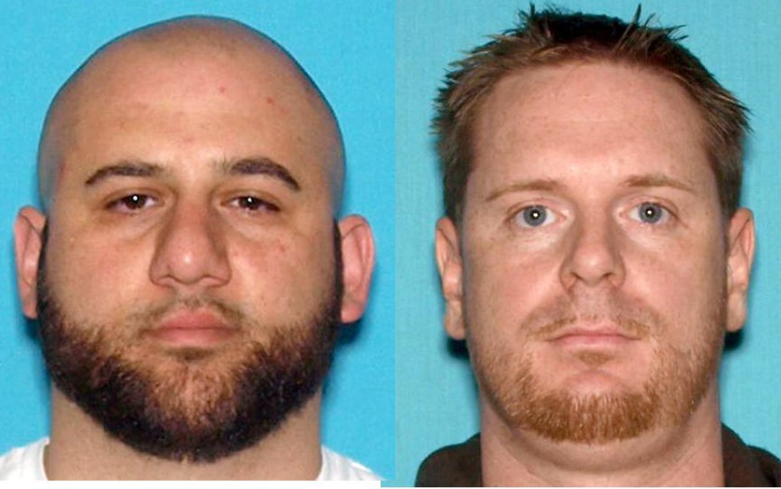
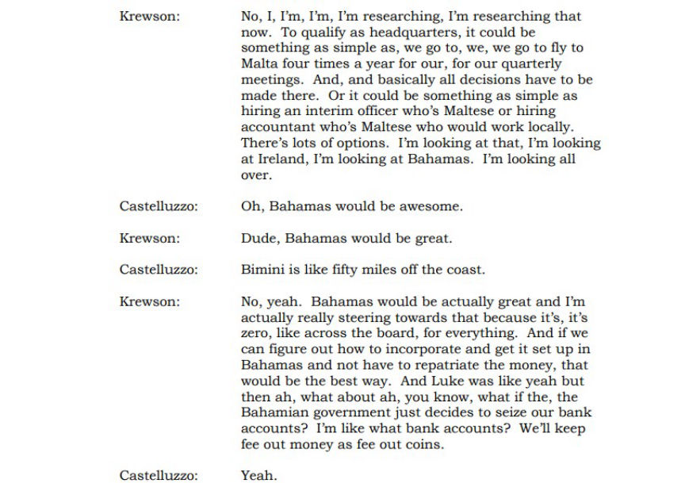

US Attorney Seeks Forfeiture of over $54 million in Crypto
~2 min read | Published on 2023-11-03, tagged Darkweb-Vendor, Money-Laundering, Seized using 467 words.
The US Attorney’s Office, District of New Jersey, is looking to acquire a forfeiture order against a convicted dark web drugs vendor serving concurrent federal and state prison sentences.

According to court documents, Christopher Castelluzzo and his accomplices started distributing drugs through the dark web in 2013. In 2014, he acquired ETH which is now worth over $54 million, using the proceeds of the drug trafficking operation.
Castelluzzo was in charge of sourcing the drugs sold through the vendor accounts while his accomplice, Luke Atwell, was in charge of running the dark web vendor accounts. The other accomplices packaged the drugs according to the orders received from their customers.
Castelluzzo imported large quantities of methylone from China and had Atwell resell it through the dark web marketplaces. The duo also bought and resold large amounts of cocaine.
In July 2014, Castelluzzo asked Atwell to send him 15 bitcoins so that he could participate in the Ethereum ICO. After receiving the bitcoin, Castelluzzo purchased 30,000 ETH in the ICO.
A federal jury found Castelluzzo and Atwell guilty of conspiracy to distribute and possess with intent to distribute a controlled substance in May 2015. Castelluzzo was sentenced to 20 years in prison. Atwell was sentenced to 18 years and four months in prison.
In May 2018, Castelluzzo and Atwell were sentenced to 21 and 19 years in prison respectively, after they pled guilty to state drug trafficking charges.
In 2021, monitored jail calls revealed that Castelluzzo, Atwell, and a third accomplice, Brian Krewson, were planning to move the 30,000 ETH overseas before seizure by LE.

The recorded phone call revealed that the trio's plan revolved around how they could move the ETH without raising suspicion. They were also looking at ways of paying as little tax as possible or not paying it at all.
The investigators executed a search warrant at Krewson’s residence on July 12, 2022. Krewson gave the investigators the password to the wallet with the 30,000 ETH. In addition to the ETH, the investigators also seized approximately 153,925.11 CRO, 244.23 BNB, 64.19 SOL, and 23,848.96 ADA.
The Ethereum hard fork gave Castelluzzo 30,000 ETC. Castelluzzo instructed Krewson to invest the ETC. The investigators established that Krewson spent 2,000 ETC on Castelluzzo’s prison commissary account. He used to fund an account on Bittrex and used it to purchase other cryptocurrencies.
On August 16, 2023, the investigators seized approximately 32,232.24 ALGO, 99.48 AVAX,0.49 BTC, 1,150.71 DOT, 1,589.32 LINK, approximately 17,208.48 MATIC, 393 TUSD, and 2,466.36 UNI from the Bitrrexx account.
The investigations also revealed that from April 14, 2014, to July 25, 2014, bitcoin wallets associated with Castelluzzo's drug trafficking operation received at least 336 BTC from the Blue Sky marketplace.
Forfeiture of the seized crypto will deny Castelluzzo and Atwell the chance to spend life after prison at an offshore destination.

Castelluzzo and Atwell
According to court documents, Christopher Castelluzzo and his accomplices started distributing drugs through the dark web in 2013. In 2014, he acquired ETH which is now worth over $54 million, using the proceeds of the drug trafficking operation.
Castelluzzo was in charge of sourcing the drugs sold through the vendor accounts while his accomplice, Luke Atwell, was in charge of running the dark web vendor accounts. The other accomplices packaged the drugs according to the orders received from their customers.
Castelluzzo imported large quantities of methylone from China and had Atwell resell it through the dark web marketplaces. The duo also bought and resold large amounts of cocaine.
In July 2014, Castelluzzo asked Atwell to send him 15 bitcoins so that he could participate in the Ethereum ICO. After receiving the bitcoin, Castelluzzo purchased 30,000 ETH in the ICO.
A federal jury found Castelluzzo and Atwell guilty of conspiracy to distribute and possess with intent to distribute a controlled substance in May 2015. Castelluzzo was sentenced to 20 years in prison. Atwell was sentenced to 18 years and four months in prison.
In May 2018, Castelluzzo and Atwell were sentenced to 21 and 19 years in prison respectively, after they pled guilty to state drug trafficking charges.
In 2021, monitored jail calls revealed that Castelluzzo, Atwell, and a third accomplice, Brian Krewson, were planning to move the 30,000 ETH overseas before seizure by LE.

One of the recorded phone calls
The recorded phone call revealed that the trio's plan revolved around how they could move the ETH without raising suspicion. They were also looking at ways of paying as little tax as possible or not paying it at all.
The investigators executed a search warrant at Krewson’s residence on July 12, 2022. Krewson gave the investigators the password to the wallet with the 30,000 ETH. In addition to the ETH, the investigators also seized approximately 153,925.11 CRO, 244.23 BNB, 64.19 SOL, and 23,848.96 ADA.
The Ethereum hard fork gave Castelluzzo 30,000 ETC. Castelluzzo instructed Krewson to invest the ETC. The investigators established that Krewson spent 2,000 ETC on Castelluzzo’s prison commissary account. He used to fund an account on Bittrex and used it to purchase other cryptocurrencies.
On August 16, 2023, the investigators seized approximately 32,232.24 ALGO, 99.48 AVAX,0.49 BTC, 1,150.71 DOT, 1,589.32 LINK, approximately 17,208.48 MATIC, 393 TUSD, and 2,466.36 UNI from the Bitrrexx account.
The investigations also revealed that from April 14, 2014, to July 25, 2014, bitcoin wallets associated with Castelluzzo's drug trafficking operation received at least 336 BTC from the Blue Sky marketplace.
Forfeiture of the seized crypto will deny Castelluzzo and Atwell the chance to spend life after prison at an offshore destination.